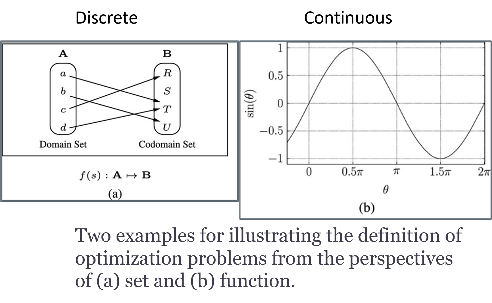
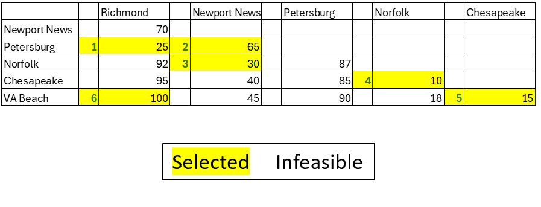

Sometimes, we go with the ‘greedy’ option that seems best in the moment. Can you think of a time when you made a quick decision like that? Did it pay off or backfire?
Definition 1
An optimization problem \(P\) is to find the optimal value, possibly subject to some constraints, out of all possible solutions.
Contains the objective function, constraint(s), and solution.
\(opt_{s \in A} f(s)\) subject to \(\forall c_i(s) \odot b_i, i=i, 2, ...,m\) where
opt is either min (for minimization) or max (for maximization),
s is a candidate solution
A and B are the domain and codomain of the problem Image, namely, A is the set of all possible solutions and B is the set of all possible outcomes of the objective function,
\(c_i(s) \odot b_i\) is the constraint, and
\(f(s): A->B\) is the objective function
\(\odot\) is \(>, <, =, <=, >=\)
Definition 2
The optimal solution is a solution, out of all feasible candidate solutions of the optimization problem \(P\), that gives the optimal value. \(f(s^*) = \operatorname{opt} \{f(s)\}, \, \forall \, c_i(s) \, \odot \, b_i, \, i = 1, 2, \dots, m.\)
Definition 3
If the optimal solution \(s*\) for the problem 𝑃 exists, then the optimal \(f(s)\) is defined as \(min_{s \in A} f(s)\), subject to \(\forall c_i(s) \odot b_i\),
While the maximization problem of maximizing \(f(s)\) subject to some constraints can be defined as \(max_{s \in A} f(s)\), subject to \(\forall c_i(s) \odot b_i\)
The Greedy Algorithm
The Greedy Algorithm is a problem-solving method that makes a series of choices, each of which looks best at first, with the hope of finding a global optimum.
The greedy strategy is a method of making choices, not a problem type. It can be applied to various domains, including those that are not about optimizing an objective function over a combinatorial set.
It’s typically used for optimization problems where local choices lead to a global solution.
Greedy algorithms focus on immediate benefits without backtracking.
Greedy algorithms are useful in scenarios where a quick, suboptimal solution is acceptable, such as in scheduling, resource allocation, and pathfinding problems
Greedy Choice Property: A local optimum is chosen at each step.
Optimal Substructure: A problem has an optimal solution that can be constructed from optimal solutions of its subproblems.
Common Problems Using Greedy Algorithm:
Coin Change Problem
Activity Selection Problem
Traveling Salesman Problem
Simple Example of Greedy Algorithm in Action
The Coin Change Problem
Given a set of coin denominations and a target amount, find the minimum number of coins that add up to the target amount.
Greedy Strategy: At each step, pick the largest denomination that doesn’t exceed the remaining amount.
\[\operatorname{coins\_used}(A) = \sum_{i=1}^{n} \left\lfloor \frac{A}{c_i} \right\rfloor \times c_i \quad \operatorname{where} \quad A = A - \left\lfloor \frac{A}{c_i} \right\rfloor \times c_i\]
Where \(\left\lfloor \frac{A}{c_i} \right\rfloor\) is the number of coins of denomination \(c_i\) is used.
\(A\) is reduced by the value \(\left\lfloor \frac{A}{c_i} \right\rfloor \times c_i\)
After using as many \(c_i\) denomination coins as possible. The process continues until \(A=0\), at which point the minimum number of coins required to make the total amount is found.
def greedy_coin_change(coins, amount): coins.sort(reverse=True) result = []for coin in coins:while amount >= coin: amount -= coin result.append(coin)# Print the coins usedprint(f"Coins used: {result}")# Return the number of coins usedreturnlen(result)# Get user input (Put in 70 to show answer, but can request information from user)amount =70# amount = int(input("Enter the amount: "))# Coin denominationscoins = [1, 5, 10, 25]# Calculate the solutionnum_coins = greedy_coin_change(coins, amount)print(f"Minimum number of coins needed: {num_coins}")
Coins used: [25, 25, 10, 10]
Minimum number of coins needed: 4
Types of Optimization Problems
The optimization problems we are facing can be classified into two categories based on the variable type of the solution space namely, solutions encoded as discrete variables and solutions encoded as continuous variables.
Discrete: Referred to as the combinatorial optimization problem (COP)
Looking for the best solution from a finite set—usually either a set of integer numbers or a subset, a permutation, or even a graph structure of something
Continuous: Referred to as the continuous optimization problem.
Looking for a set of real numbers that not only satisfy all the given constraints but also give the best solution
Discrete vs Continuous

Discrete vs Continuous
Discrete
Domain: The set of all possible input values for a function.
Codomain: The set of all potential output values that the function can map to.
An objective function is a function that is being optimized (maximized or minimized) in a given problem. It takes an input from the domain and produces an output in the codomain.
Given two sets \(A\) and \(B\), and an objective function \(f\), we can understand how the function maps elements from the domain \(A\) to the codomain \(B\).
Continuous
Shows the relationship between the angle θ and the value of sin(θ) at specific points. This relationship arises from the trigonometric sine function, which describes a wave-like pattern that oscillates between -1 and 1.
θ represents the angle, typically in radians, and the values given (0, 0.25\(\pi\), 0.50\(\pi\), etc.) are specific points along the unit circle.
sin(θ) represents the sine of the angle θ, which is the y-coordinate of the corresponding point on the unit circle.
The values provided in the table correspond to these properties of the sine function. The function gradually increases from 0 to 1, then decreases back to 0, then continues to -1, and finally returns to 0, completing one full cycle.
Combinatorial Optimization Problems (COPs)
The goal of COPs is to find the optimal solution from a finite set or a countably infinite set of solutions. The possible solutions of a COP are generally “discrete” or can be discretized.
Total distance traveled: = 25+65+30+10+15+100 = 245 miles

TSP Feasibility Map
TSP Python Implementation
Dictionary vs Dictionary of Dictionaries
A dictionary in Python is a built-in data structure that stores data in key-value pairs. It is unordered, mutable, and indexed by unique keys. The structure is enclosed within curly braces {}. Each key is associated with a value, and the two are separated by a colon :. Keys must be immutable types like strings, numbers, or tuples, while values can be of any data type, including other dictionaries.
A dictionary of dictionaries is a nested data structure in Python where the values of a dictionary are themselves dictionaries. It allows for organizing hierarchical or complex data in a structured way. This type of dictionary is especially useful for representing relationships, groupings, or matrices where each primary key maps to another dictionary of key-value pairs.
A distance matrix or distance map is helpful in implementing a TSP model in python can use the dictionary of dictionaries structure in python to implement. A distance map stores the distances between each pair of locations.
Outer Dictionary: Each key represents a city.
Inner Dictionary: Contains distances to other cities from that city.
Optimal route using Nearest Neighbor: Richmond -> Petersburg -> Newport News -> Norfolk -> Chesapeake -> Virginia Beach -> Richmond
Total distance traveled: 245 miles
Using AI
Use the following prompt on a generative AI, like chatGPT, to learn more about the topics covered.
Greedy Decisions: Think of a real-world example where you made a “greedy” choice (choosing the option that seemed best at the moment). Did it lead to the best possible outcome? Why or why not?
Optimization Problems: Explain the difference between discrete and continuous optimization problems. Give a real-world example of each type.
Coin Change Problem: Implement the greedy_coin_change function from the slides. Then, modify it to handle cases where the denominations do not lead to an optimal solution. Explain the changes made.
Nearest Neighbor TSP: Given a distance matrix for a Traveling Salesman Problem (TSP), write Python code using the greedy nearest neighbor approach. Compare its solution to the optimal path for the same problem.
Greedy Limitations: Discuss a problem where a greedy algorithm does not guarantee the optimal solution. How could this limitation be addressed (e.g., using dynamic programming or exhaustive search)?
Practical Scenarios: Discuss a real-world system (e.g., ride-sharing, network routing, or resource allocation) where greedy algorithms are used. What trade-offs do they involve?
Designing a Greedy Algorithm: Create your own optimization problem and solve it using a greedy algorithm. Explain your reasoning and solution step-by-step.
Conclusions
While greedy algorithms can provide optimal solutions for certain problems (e.g., fractional knapsack), they don’t always guarantee an optimal result for all problems. Understanding when to use them is key.
Greedy algorithms guarantee an optimal solution for problems that exhibit the greedy choice property. However, the Greedy Algorithm may not always yield the optimal solution. Greedy works well for certain problems like the Coin Change Problem with standard denominations.
Greedy algorithms can be faster and more efficient in terms of time complexity compared to other approaches (like dynamic programming or exhaustive search), especially when the problem size is large.
The approach is simple and efficient, making it ideal for many practical scenarios. Greedy algorithms typically use less memory because they do not need to store all possible solutions or intermediate results, unlike dynamic programming or exhaustive search methods.